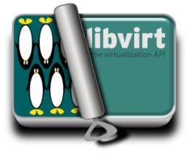

QEMU is a generic and open source machine emulator and virtualizer. When used as an emulator, QEMU can run OSes and programs made for one machine (e.g. an ARM board) on a different machine (e.g. your own x86_64 PC). When used as a virtualizer, QEMU achieves near native performance by executing the guest code directly on the host CPU using KVM.
KVM (for Kernel-based Virtual Machine) is a full virtualization solution for Linux on hardware containing virtualization extensions. It consists of a loadable kernel module that exposes virtualization APIs to userspace for use by applications such as QEMU.
libvirt  is a library and daemon providing a stable open source API for managing virtualization hosts. It targets multiple hypervisors including QEMU, KVM, LXC, Xen, OpenVZ, VMWare ESX, VirtualBox and more.
libguestfs is a set of tools for accessing and modifying virtual machine (VM) disk images. You can use this for viewing and editing files inside guests, scripting changes to VMs, monitoring disk used / free statistics, creating guests, P2V, V2V, performing backups, cloning VMs, building VMs, formatting disks, resizing disks, and much more.
virt-manager is a desktop user interface for managing virtual machines through libvirt. It primarily targets KVM VMs, but also manages Xen and LXC. It also includes the command line provisioning tool virt-install.
libosinfo provides a database of information about operating system releases to assist in optimally configuring hardware when deploying virtual machines. It includes a C library for querying information in the database, which is also accessible from any language supported by GObject Introspection.